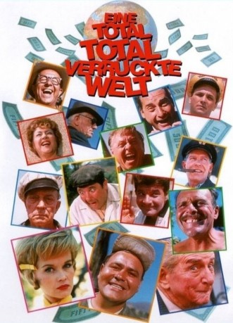

#2762 Eine Total total verrückte Welt
Alternativ: It's a Mad, Mad, Mad, Mad World
Auszeichnungen: 1 Oscars gewonnen für 5 Oscars nominiert
 
 IMDB-Wertung: 7.6 / 10
IMDB-Wertung: 7.6 / 10  Metascore: 0
Metascore: 0 
Nach 15 Jahren kommt Smiler Grogan aus dem Gefängnis frei. Jetzt gibt es nur noch ein Ziel: der kalifornische Naturpark, wo er nach seinem letzten großen Coup 350.000 US-Dollar versteckt hat. Doch bei der halsbrecherischen Fahrt über den Highway verunglückt Grogan. Auch die acht Zeugen des Unfalls können nichts mehr für ihn tun. Ihre Hilfsbereitschaft hat sich trotzdem gelohnt: Der sterbende Grogan beschreibt ihnen, wo sie das versteckte Geld finden können. Wie sollen sie es unter sich aufteilen? Am besten gar nicht! Eine verrückte Jagd nach dem Schatz beginnt.
Jahr: 1963
Dauer: 154 Minuten
FSK: 12
Land: USA Studio: United ArtistsTonspuren: DTS - ,
Untertitel: Englisch,
Auflösung: 720p (1280x464) Größe: 7188 MB
Genre: Action, Komödie, Abenteuer, Krimi
Regisseur:  Stanley Kramer
Stanley Kramer
Drehbuch: William Rose, Tania Rose, William Rose, Tania Rose
Soundtrack: Ernest Gold
Darsteller:
 Spencer Tracy als Capt. T. G. Culpepper
Spencer Tracy als Capt. T. G. Culpepper- Milton Berle als J. Russell Finch
 Sid Caesar als Melville Crump
Sid Caesar als Melville Crump Buddy Hackett als Benjy Benjamin
Buddy Hackett als Benjy Benjamin- Ethel Merman als Mrs. Marcus
 Mickey Rooney als Ding Bell
Mickey Rooney als Ding Bell Dick Shawn als Sylvester Marcus
Dick Shawn als Sylvester Marcus- Phil Silvers als Otto Meyer
- Terry-Thomas als J. Algernon Hawthorne
 Jonathan Winters als Lennie Pike
Jonathan Winters als Lennie Pike- Edie Adams als Monica Crump
- Dorothy Provine als Emeline Marcus-Finch
- Eddie 'Rochester' Anderson als Second Cab Driver
 Jim Backus als Tyler Fitzgerald
Jim Backus als Tyler Fitzgerald- Joe E. Brown als Union Official
- Alan Carney als Police Sergeant
- Chick Chandler als Policeman Outside Ray & Irwin's Garage
- Barrie Chase als Sylvester's Girlfriend
- William Demarest als Police Chief Aloysius
 Andy Devine als Sheriff of Crockett County
Andy Devine als Sheriff of Crockett County Peter Falk als Third Cab Driver
Peter Falk als Third Cab Driver Norman Fell als Detective at Grogan's Crash Site
Norman Fell als Detective at Grogan's Crash Site- Paul Ford als Col. Wilberforce
- Stan Freberg als Deputy Sheriff
- Leo Gorcey als First Cab Driver
 Sterling Holloway als Fire Chief
Sterling Holloway als Fire Chief- Marvin Kaplan als Irwin
- Edward Everett Horton als Mr. Dinckler
- Buster Keaton als Jimmy the Crook
 Don Knotts als Nervous Motorist
Don Knotts als Nervous Motorist Charles Lane als Airport Manager
Charles Lane als Airport Manager Mike Mazurki als Miner
Mike Mazurki als Miner Charles McGraw als Lt. Matthews
Charles McGraw als Lt. Matthews- Zasu Pitts als Gertie - Switchboard Operator
 Carl Reiner als Tower Controller at Rancho Conejo
Carl Reiner als Tower Controller at Rancho Conejo- Madlyn Rhue als Secretary Schwartz
 Roy Roberts als Policeman Outside Irwin & Ray's Garage
Roy Roberts als Policeman Outside Irwin & Ray's Garage- Arnold Stang als Ray
- Jesse White als Radio Tower Operator at Rancho Conejo
- Jimmy Durante als Smiler Grogan
- Morey Amsterdam als Uncle Mike , uncredited
- Jack Benny als Man in Car in Desert , uncredited
- Larry Fine als Fireman , uncredited
 Stacy Harris als Police Radio Unit F-7 , uncredited
Stacy Harris als Police Radio Unit F-7 , uncredited William Hoehne Jr. als Fireman , uncredited
William Hoehne Jr. als Fireman , uncredited- Moe Howard als Fireman , uncredited
 Allen Jenkins als Cop , uncredited
Allen Jenkins als Cop , uncredited- Ben Lessy als George , uncredited
 Jerry Lewis als Driver Running Over Hat , uncredited
Jerry Lewis als Driver Running Over Hat , uncredited Elliott Reid als Dr. Chadwick , uncredited
Elliott Reid als Dr. Chadwick , uncredited
Datei: X:\1963\Total total verrückte Welt, Eine (1963, FSK12, 1280x464).mkv seit 14.12.2015
Festplatte: HD 1900-1970
 Es gibt insgesamt 23 Filme in der Gruppe '1963'
Es gibt insgesamt 23 Filme in der Gruppe '1963'